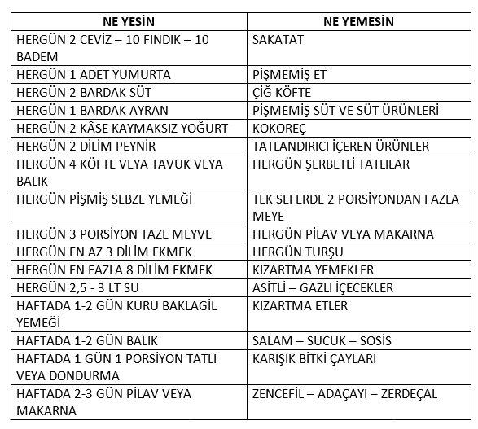
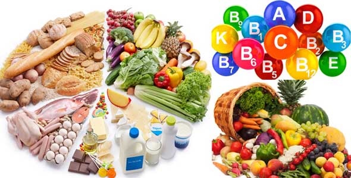

Hamilelikte Beslenme
Yakın gelecekte bebeğinizi kucağınıza alacaksınız ama önce, hem kendinizin hem bebeğinizin sağlığına dikkat etmelisiniz. Bunun için yapmanız gereken en temel şeylerden bir tanesi de beslenmenize dikkat etmek. Çünkü bildiğiniz gibi siz ne yerseniz, bebeğiniz de onu yiyecektir. Bu da demek oluyor ki doğru besinler almalı, sağlığınıza dikkat etmelisiniz.Hamilelikte sağlıklı beslenme, bebeğinizin ömür boyu sağlıklı olmasında çok büyük önem taşıyor. Elbette ki gebeliğiniz boyunca belirli miktarlarda kilo alacaksınız fakat aldığınız kilolarınızı hayat boyu taşımak istemiyorsanız dikkat etmeniz gerekenlerin neler olduğunu bu kategori altında bulabilirsiniz. Diğer yandan hem kendi sağlığınız hem bebeğinizin sağlığını kötü etkileyecek besinlerin neler olduğuna da buradan ulaşabilirsiniz.Sağlıklı bir gebelik için en önemli faktörlerden biri düzenli doktor kontrollerine gitmek olduğu kadar, yediklerinize, içtiklerinize de dikkat etmenizdir. Yeterli ve dengeli beslenme için nelere ihtiyacınız olduğunu, vücudunuzun hangi vitaminleri ve mineralleri alması gerektiğini adım adım takip etmelisiniz. 9 ay 10 gün boyunca sizin ve bebeğinizin sağlığını koruyacak bu rehber niteliğindeki kategoriyi mutlaka okuyun.
